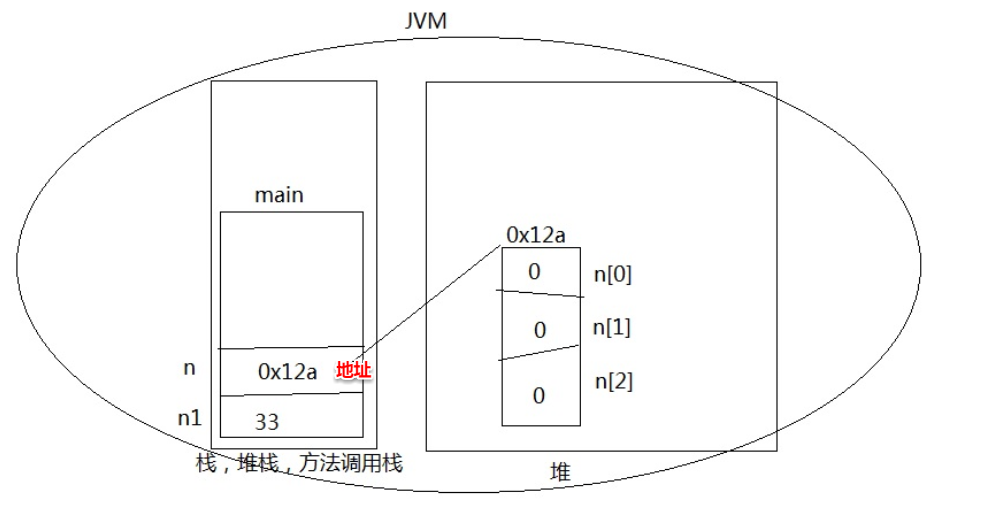

数组：
一个容器，存储相同数据类型的一组数。
数组的长度是固定的（数组创建完成之后长度不变）
栈：
1.存：基本数据类型 和 引用；
2.后进先出的数据结构；
3.栈分配的空间小；
4.频繁创建 和 销毁的数据结构。
堆：
1.存：对象。
2.堆分配的空间大；
3.不会频繁创建和销毁。
基本数据类型不会用到堆来存储数据,都是直接将变量的具体数值存在栈里面。
引用数据类型(这里拿数组来举例)都是分两部分来存:名字(即数组名,也就是地址，即具体数据在堆中的地址)存在栈里面; 对象(数组实例化的对象,因为数组是通过实例化一个数组类的对象来存储数据的)存在堆里面。
所以数组也可以先单独定义(只在栈中存储数组名,不分配实际堆的具体数值的存储空间),再赋值(用单独的语句给整体赋值时再分配堆的空间储存具体的数值)
基本数据类型和引用数据类型还有个重要的区别是: 因为基本数据类型的变量存的都是值,而引用数据类型的变量存的都是对象的地址, 所以引用数据类型说到底就是个类, 而基本数据类型则不是, 所以引用数据类型的变量可以通过"引用变量.成员"的方式调用类的成员(当然也可以通过"对象.成员"的方式调用),而基本数据类型的变量则没啥可调的
-------------------------------------------------------------------------------------------------------------------------------------------------------------------------
一维数组内存图

-------------------------------------------------------------------------------------------------------------------------------------------------------------------------
注意, "只有在堆里开辟空间时, 才会出现在赋值语句执行之前，给各种数据类型的变量先赋上默认初始值, 之后才是赋值语句赋值", 也就是说,只有数组或引用类型在new的时候, 数组的元素或引用类型的成员变量, 才会有赋默认值的现象。像局部变量(在方法体里定义的变量)这种不在堆里开辟新空间的, 是不会出现在赋值语句执行之前, 给他们赋一个默认值的。 另外还要注意, 如果数组没有new并且作为类的成员变量的话, 默认的初始化值是null。
举例如下:
下面的四个编译错误都是如下图红框一样的错误提示

各种数据类型的默认初始值: (包括基本数据类型和引用数据类型)
1、整数类型（byte、short、int、long）的基本类型变量的默认值为0。
2、单精度浮点型（float）的基本类型变量的默认值为0.0f。
3、双精度浮点型（double）的基本类型变量的默认值为0.0d。(单精度和双精度的默认值打印出来都是0.0)
4、字符型（char）的基本类型变量的默认为 “/u0000”。
5、布尔性的基本类型变量的默认值为 false。
6、引用类型的变量是默认值为null。 (包括了数组。数组本身还是一个引用类型的, 如果没有new时, 作为类的成员变量, 给他赋的默认值就是null, 但是数组new了之后, 就是给其各个元素赋默认值了)
-------------------------------------------------------------------------------------------------------------------------------------------------------------------------
数组定义

-------------------------------------------------------------------------------------------------------------------------------------------------------------------------
1、数组的初始化
(1)动态初始化
动态初始化只能一个一个元素进行赋值,不能一条语句给整体赋值

也可以分成两条语句来写,这也勉强算是"先定义后初始化"吧,毕竟也是new了一下, 只是初始化的都是默认值0而已

(2)静态初始化
用这种new一个的方式(类、对象的方式),既可以定义的同时初始化,也可以先定义后初始化
1)定义的同时初始化
a. 首先是用new的

b. 其次是不用new的定义方式(类似于C语言定义数组的方式)(不过这里的定义出来的数组依然是类与对象的形式,也就是说依然是数组类的一个对象)

这种赋值方式就和C语言一样了,也是不能分成两行(即不能先一条语句定义,再单独用另一条语句给整个数组初始化),分成两行会报错。
2)先定义后初始化

2、给数组赋值(指单个单个赋值,不是一次性整体赋值)
(1)直接代码赋值

(2)控制台输入 赋值

-------------------------------------------------------------------------------------------------------------------------------------------------------------------------
做一个题,模拟两个数组值的变换过程。下面的图中方框里的代码语句就对应右边的该语句执行时的内存变化图。


--------------------------------------------------------------------------------------------------------------------------------------------------------------------------
循环赋值
循环输出：
基本for循环: 可用于任何循环(所有语言都有的,通用的循环)
增强for循环: 只用于集合 和 数组的循环；(java特有的循环,不同于C语言)
for(数据类型 变量名:数组名){
}

普通for和增强for的区别：
1.增强for只能遍历数组中的所有元素;
指定范围遍历要用普通for;
2.增强for只能顺序遍历;
逆序遍历等方式要用普通for;
3.增强for不能改变元素的值，（如果元素是引用类型, 可以改变其成员变量的值）。
普通for可以改变元素值。
对于第三点的验证如下图:
增强for循环不能改变元素的值


结果不变:如下图

普通for循环是会变的:如下图

结果如下图:

--------------------------------------------------------------------------------------------------------------------------------------------------------------------------
算法：
1、最大值：
2、排序
1)冒泡
相邻的两个数字进行比较。


2）选择
某一个位置和后边的所有元素比较。

3）插入排序
某一个位置和前边的所有元素比较，这个位置的元素值比前边的元素值小，那么就把这个位置的元素值插入到前边那个元素的位置。（下面老师这种写法质量太差，明明就只要两层循环就能搞定）

3、二分查找
先从小到大排序，再分成两段查找数值。
以下是eclipse中的二分查找原码

———————————————————————手写与上传资料分割线———————————————————————